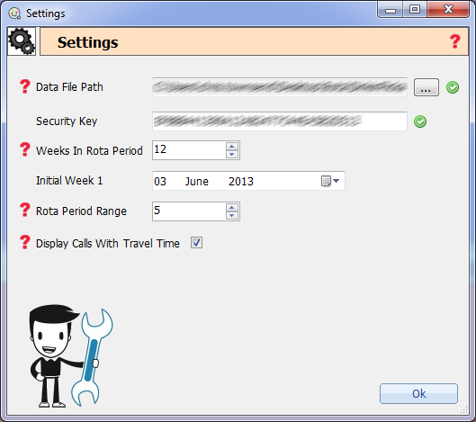

This page is designed to help you get Cura up and running. If upon first running of Cura you are greeted with the following box this means there is a problem with either the data file or the security key.
In this page I will only be going into detail about the data file and security key but for more information on the settings please click here.

You will be able to tell if there is an problem with the data file path or the security key as they will have a icon next to the input area. (In the example above both fields are correct and are shown with a icon.
Data File Path
If there is a icon next to the data file path field then this means that Cura can't find the file specified or that it is not a valid Cura data file.
Note: Valid Cura data files end with the extension .db and are fully compatible with SQLite.
To repair the data file path click the button and you will be prompted with a file loading window. You now need to find the .db file you are working from, this is usually located in a folder called "data" which is located in the same directory as Cura.exe. Just select the file and click Load. Once you do this the icon next to the data file path should change to a icon if the file is valid.
Security Key
The security key is required to load Cura and is only valid for a year. This must be obtained from your local administrator or local distributor of the Cura software.